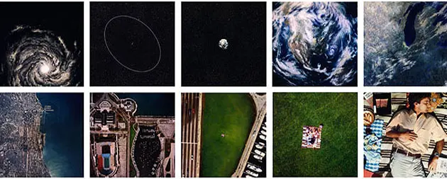
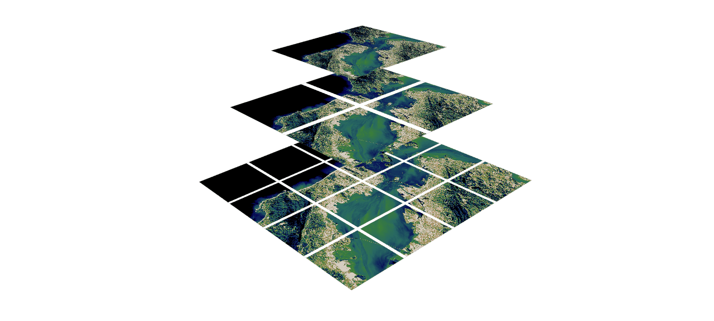

import requests
import geopandas as gpd
def index_service_satellietdataportaal(longitude, latitude, resolutions):
url = "https://www.satellietdataportaal.nl/wp-admin/admin-ajax.php"
post_data = [
('action', 'sdp_api'),
('searchObject[geometry][type]', 'Point'),
('searchObject[geometry][coordinates][]', longitude),
('searchObject[geometry][coordinates][]', latitude)
]
for resolution in resolutions:
post_data.append(('searchObject[properties][filters][resolutionfilter][eq][]', resolution))
headers = {'content-type': 'application/x-www-form-urlencoded;charset=UTF-8'}
r = requests.post(url=url, data=post_data, headers=headers)
feats = r.json()['data']['features']
if not feats:
return gpd.GeoDataFrame()
gdf = gpd.GeoDataFrame.from_features(feats)
return gdfDe 🌀 Tegeltijdportaal
Binnen de tegeltijdportaal maken we het mogelijk om het tijdsverloop van elke locatie in Nederland te zien met zeer hoge resolutie satellietdata. Dit doen we door gebruik te maken van voorgerenderde tegels vanuit het satellietdataportaal. Hiermee krijg je snel inzicht in de dynamiek van locaties. In dit artikel duiken we dieper in op welke manier we deze informatie inzichtelijk maken.
Dit doen we in 3 stappen, namelijk:
- Wat bedoelen we met een 🔲 Tegel definitie?
- Hoe werkt de 🌀 Tegeltijdportaal?
- Op welke manier is Solara gebruikt?
Wat bedoelen we met een 🔲 Tegel definitie?
De nog altijd fascinerende tiendesprongen van Kees Boeke zijn je vast bekend sinds er in 1977 een film voor IBM werd gemaakt onder de naam Powers of Ten. 
Het laat een picknickend gezin zien in de haven van Chicago waar de camera steeds verder uitzoomt tot het hele universum te zien is, waarnaar het vervolgens weer inzoomt.
Waar de film vooral gaat over het begrip van de machten van 10 en de relatieve verhoudingen tussen kosmisch en microscopisch niveau is, gaat het mij hier nu vooral over het concept dat je een bepaalde mate van detail ziet op een bepaald zoom niveau, ondanks dat het beeld wel een vaste afmeting heeft.
De satellietdata welke wordt ingekocht vanuit het satellietdataportaal heeft een hoge ruimtelijke resolutie. Recente opnames hebben bijvoorbeeld al een ruimtelijke resolutie van 30 centimeter. Om deze hele hoge resolutie fotos toegankelijker te maken gaan we de beelden net als de in de docu van de Power of Ten op delen in vaste zoomlevels. En op elk zoomlevel maken we tegels met vaste afmetingen. Op deze manier blijft een tegel altijd een vaste afmeting hebben, maar al naar gelang het gekozen zoomlevel zie je een hogere of lagere mate van detail.

Het tegelschema of protocol WebMercatorQuad is zo’n manier om de aarde in kleine vierkante rasters of tegels te verdelen. Elke heeft een vaak een vaste afmeting van 256x256 pixels. En elk zoomlevel heeft daarmee zijn eigen vooraf gedefinieerde ruimtelijke resolutie. PDOK heeft de volgende tabel beschikbaar om hier iets meer duiding aan te geven:
import requests
import pandas as pd
r = requests.get('https://api.pdok.nl/lv/bag/ogc/v1_0/tileMatrixSets/WebMercatorQuad?f=json')
pd.DataFrame.from_dict(r.json()['tileMatrices']).set_index('id')[15:21]| tileWidth | tileHeight | matrixWidth | matrixHeight | scaleDenominator | cellSize | pointOfOrigin | |
|---|---|---|---|---|---|---|---|
| id | |||||||
| 15 | 256 | 256 | 32768 | 32768 | 17061.836671 | 4.777314 | [-20037508.3427892, 20037508.3427892] |
| 16 | 256 | 256 | 65536 | 65536 | 8530.918335 | 2.388657 | [-20037508.3427892, 20037508.3427892] |
| 17 | 256 | 256 | 131072 | 131072 | 4265.459168 | 1.194329 | [-20037508.3427892, 20037508.3427892] |
| 18 | 256 | 256 | 262144 | 262144 | 2132.729584 | 0.597164 | [-20037508.3427892, 20037508.3427892] |
| 19 | 256 | 256 | 524288 | 524288 | 1066.364792 | 0.298582 | [-20037508.3427892, 20037508.3427892] |
| 20 | 256 | 256 | 1048576 | 1048576 | 533.182396 | 0.149291 | [-20037508.3427892, 20037508.3427892] |
Ik heb hier enkel de rijen die overeenkomen met zoomlevels 15 tot en met 20 getoond. Het gaat mij vooral om kolom cellSize welke aangeeft wat de ruimtelijke resolutie is van een unieke pixel binnen elk zoomniveau. Hier valt bijvoorbeeld te zien dat op zoomlevel 17 de ruimtelijke resolutie van een enkele pixel ~1.19 meter is en zoomlevel 19 de ruimtelijke resolutie van een enkele pixel ~0.29 is.
Meer info over deze 2 dimensionale tile matrix set standaard is ook te vinden via de website van OGC. En daarnaast deze video-presentatie van Jachym hoe je om kan gaan met grote hoeveelheden raster data via tegel definities met onder andere open source sofware.
Om iets meer gevoel te krijgen met het effect van de zoom niveaus kan je de slider in het volgende figuur heen en weer bewegen. Het laat, gegeven een zoom level, zien hoe groot een tegel is voor het inliggende coordinaat van 🌍 Locatie HKV in Amersfoort.
import geopandas as gpd
import altair as alt
gdf_tile = gpd.read_file('zoom_tegel_HKV_amersfoort.geo.json', driver='GeoJSON')
# topologisch gesimplificeerd met https://github.com/mattijn/topojson
gdf_prov = gpd.read_file('provincies_2023.simp.geo.json', driver='GeoJSON')
xmin, ymin, xmax, ymax = gdf_prov.total_bounds
# fit object should be a GeoJSON-like Feature or FeatureCollection
extent_NL = {"type": "Feature", "geometry": {"type": "Polygon", "coordinates": [[[xmax, ymax], [xmax, ymin], [xmin, ymin], [xmin, ymax], [xmax, ymax]]]}, "properties": {}}
slider = alt.binding_range(min=8, max=17, step=1, name='zoom level')
filter = alt.param(bind=slider, value=8)
chart = alt.layer(
alt.Chart(gdf_prov).mark_geoshape(filled=False),
alt.Chart().mark_circle(color='black').encode(
latitude=alt.datum(52.1515),
longitude=alt.datum(5.3790),
href=alt.value('https://www.hkv.nl')
),
alt.Chart(gdf_tile).mark_geoshape(fill='orange', opacity=0.8).transform_filter(alt.datum.zoom_level == filter),
alt.Chart(gdf_tile).mark_geoshape(clip=True, filled=False, stroke='black', strokeWidth=1)
).project(type='mercator', fit=extent_NL).add_params(filter)
chartIn oranje zie je de daadwerkelijke tegel op het gekozen zoom nivea met het inliggende coordinaat van 🌍 Locatie HKV in Amersfoort en zwart omlijnt zie je de range aan tegels voor de verschillende zoom niveaus van deze coordinaat. Voor een kaart met geheel Nederland in beeld zijn de tegels vanaf level 16 niet meer zichtbaar op deze kaart. Om de inhoud van deze tegels te tonen zul je eerst verder moeten inzoomen op het interesse gebied.
Zoals je ziet volgen de tegels een vaste volgordelijkheid. Een specifieke locatie is daarmee altijd gekoppeld aan een eenzelfde tegel gegeven het zoom niveau. Zoals gezegd heeft de inhoud van elke tegel steeds een vaste afmeting. In ons geval is dit 256 x 256 pixels.
Binnen het SBIR project met het thema biodiversiteit, subthema: natuur werken wij, vanuit het satellietataportaal, met tegels op 🔍 Zoomlevel 17. Deze tegels bevatten daarmee de data op het resolutie niveau die wij voor de gekozen toepassing toepasselijk vinden.
Al met al is een gegeven 🔲 Tegel definitie dus een combinatie van een 🌍 Locatie en een 🔍 Zoomlevel.
Hoe werkt de 🌀 Tegeltijdportaal?
Nu we weten wat een 🔲 Tegel definitie is, laten we iets meer ingaan op welke manier we dit koppelen aan de services binnen het satellietdataportaal. We beginnen met een schematische weergave van de de applicatie, die we vervolgens in stapjes, met bijbehorende code uitwerken.
De applicatie werkt als volgt (voor simplificatie negeren we de quadkey als invoer):
graph TB
style invoer fill:#f0f0f0,stroke:#333,stroke-width:2px
style tussenstap fill:#f0f0f0,stroke:#333,stroke-width:2px
style uitvoer fill:#f0f0f0,stroke:#333,stroke-width:2px
style in1 fill:#ffff,stroke:#333,stroke-width:1px
style in2 fill:#ffff,stroke:#333,stroke-width:1px
style in3 fill:#ffff,stroke:#333,stroke-width:1px
style in4 fill:#ffff,stroke:#333,stroke-width:1px
style int2 fill:#ffff,stroke:#333,stroke-width:1px
style int3 fill:#ffff,stroke:#333,stroke-width:1px
style out1 fill:#ffff,stroke:#333,stroke-width:1px
style int1 fill:#F8D664,stroke:#333,stroke-width:1px
style out2 fill:#F8D664,stroke:#333,stroke-width:1px
subgraph invoer
in1[🌍 Locatie]
in2[📏 Sensor resolutie]
in3[🔍 Zoomlevel]
in4[🎨 Kleuren composiet]
end
subgraph tussenstap
int1[⚙️ Index service satellietdataportaal]
int2[🔲 Tegel definitie]
int3[⏱️ Beschikbaarheid opnamen]
int4[📑 Collectie tegels]
end
subgraph uitvoer
out1[📊 Tegeltijdgrafiek]
out2[⚙️ Tegel service satellietdataportaal]
end
in1 --> int1
in2 --> int1
in3 --> int2
in1 --> int2
in4 --> int3
int1 --> int3
int2 --> int3
int3 --> int4
int4 --> out1
out1 --> out2 --> out1 Laten we beginnen met het bevragen van de ⚙️ Index service satellietdataportaal met de 🌍 Locatie en de 📏 Sensor resolutie input.
We maken gebruik van een index_service_satellietdataportaal functie. Dit retourneert een geopandas GeoDataFrame gegeven een input op basis van longitude, latitude en gewenste resoluties. De 🌍 Locatie geven we op in decimale graden en de 📏 Sensor resolutie in meters.
longitude = 5.3790
latitude = 52.1515
resolutions = [0.3, 0.5]
gdf_layers = index_service_satellietdataportaal(longitude, latitude, resolutions)
gdf_layers.head()| geometry | acquisitiondate | acquisitiontime | id | layers | resolution | sensorname | |
|---|---|---|---|---|---|---|---|
| 0 | POLYGON ((4.43776 52.62078, 4.56662 52.61387, ... | 2024-01-19 | 11:07:36 | 20240119_110736_PNEO-03_1_1 | [{'composite': 'IRG', 'tile_link': 'https://ti... | 0.3 | Pleiades-NEO |
| 1 | POLYGON ((4.50446 52.59804, 4.74804 52.59910, ... | 2023-11-28 | 11:07:59 | 20231128_110759_PNEO-03_1_1 | [{'composite': 'RGB', 'tile_link': 'https://ti... | 0.3 | Pleiades-NEO |
| 2 | POLYGON ((4.56333 52.50745, 4.56340 52.50726, ... | 2023-09-18 | 10:52:26 | 20230918_105226_PNEO-04_1_39 | [{'composite': 'IRG', 'tile_link': 'https://ti... | 0.3 | Pleiades-NEO |
| 3 | POLYGON ((4.51417 52.44402, 4.61988 52.44304, ... | 2023-09-08 | 11:00:03 | 20230908_110003_PNEO-04_1_1 | [{'composite': 'RGB', 'tile_link': 'https://ti... | 0.3 | Pleiades-NEO |
| 4 | POLYGON ((4.75111 52.49500, 4.75172 52.49499, ... | 2023-08-16 | 11:08:11 | 20230816_110811_PNEO-03_1_1 | [{'composite': 'IRG', 'tile_link': 'https://ti... | 0.3 | Pleiades-NEO |
Zoals je kunt zien bevat dit informatie over de de datum en tijd van acquisitie, naam van de sensor en de resolutie die toebehoort tot de resolutie en bevat het een kolom met layers. Deze layers koppelen we aan onze gewenste tegel. De tegel definieren we met behulp van onze 🌍 Locatie en 🔍 Zoomlevel. We maken hierbij gebruik van de WebMercatorQuad tegelschema, zoals gezegd in de sectie over de 🔲 Tegel definitie.
Daarnaast heeft het satellietdataportaal twee mogelijkheden voor een 🎨 Kleuren composiet. In ons geval maken wij gebruik van het vals kleuren composiet, waarbij we wel gebruiken maken van de nabij-infrarode band, rode band, en groene band, maar niet van de blauwe band. In het satellietdataportaal heet dit 🎨 Kleuren composiet IRG. Laten we onze opgevraagde layers verder opwerken om de gewenste 📑 Collectie tegels aan te maken.
def tile_collection(df, tile, composite):
if "layers" in df.columns:
df["tile_link"] = [next((layer["tile_link"] for layer in layers if layer["composite"] == composite), None) for layers in df["layers"]]
df["image"] = [uri.format(z=tile.z, x=tile.x, y=f'{tile.y}.png') for uri in df["tile_link"]]
df = df[["id", "acquisitiondate", "resolution", "sensorname", "image", "tile_link"]]
return dfWe maken gebruik van een tile_collection functie. Dit retourneert een pandas DataFrame gegeven de GeoDataFrame met layers, een 🔲 Tegel definitie, en het gewenste 🎨 Kleuren composiet.
import mercantile
composite = 'IRG'
tile = mercantile.tile(longitude, latitude, zoom=17)
df_tiles = tile_collection(gdf_layers, tile, composite)
df_tiles.head()| id | acquisitiondate | resolution | sensorname | image | tile_link | |
|---|---|---|---|---|---|---|
| 0 | 20240119_110736_PNEO-03_1_1 | 2024-01-19 | 0.3 | Pleiades-NEO | https://tiles1.geoserve.eu/Pleiades-NEO_NRG/ti... | https://tiles1.geoserve.eu/Pleiades-NEO_NRG/ti... |
| 1 | 20231128_110759_PNEO-03_1_1 | 2023-11-28 | 0.3 | Pleiades-NEO | https://tiles1.geoserve.eu/Pleiades-NEO_NRG/ti... | https://tiles1.geoserve.eu/Pleiades-NEO_NRG/ti... |
| 2 | 20230918_105226_PNEO-04_1_39 | 2023-09-18 | 0.3 | Pleiades-NEO | https://tiles1.geoserve.eu/Pleiades-NEO_NRG/ti... | https://tiles1.geoserve.eu/Pleiades-NEO_NRG/ti... |
| 3 | 20230908_110003_PNEO-04_1_1 | 2023-09-08 | 0.3 | Pleiades-NEO | https://tiles1.geoserve.eu/Pleiades-NEO_NRG/ti... | https://tiles1.geoserve.eu/Pleiades-NEO_NRG/ti... |
| 4 | 20230816_110811_PNEO-03_1_1 | 2023-08-16 | 0.3 | Pleiades-NEO | https://tiles1.geoserve.eu/Pleiades-NEO_NRG/ti... | https://tiles1.geoserve.eu/Pleiades-NEO_NRG/ti... |
Onze 📑 Collectie tegels in de vorm van een pandas DataFrame geven we weer met een Vega-Altair grafiek.
highlight = alt.selection_point(on='mouseover', empty=False, nearest=False, encodings=['x'])
chart = alt.Chart(df_tiles, height=75, width=alt.Step(15)).mark_bar(
opacity=1,
strokeWidth=2,
cursor='pointer',
cornerRadius=15
).encode(
x=alt.X('acquisitiondate:N').axis(formatType='time', format='%Y-%m-%d').title(None),
fill=alt.Fill('sensor_resolution:N').legend(orient='top').sort(field='resolution', op='max', order='ascending'),
stroke=alt.condition(highlight, alt.value('black'), alt.value('transparent')),
tooltip=alt.Tooltip(['image']),
order=alt.Order('resolution:Q'),
).transform_calculate(
sensor_resolution=alt.datum.sensorname + " (" + alt.datum.resolution + "m)"
).add_params(
highlight
)
chartOp de x-as zien we alle datums waarop een uniek satelliet-opname beschikbaar is van de locatie. De kleuren geven aan met welke satelliet-sensor de opname gemaakt is. Recentere opnamen hebben een hogere resolutie. Op dit moment koopt GeoServe namens NSO beelden in met een ruimtelijke resolutie van 0.3 meter van Pleiades-NEO, een satelliet-constellatie van Airbus.
Wanneer je met je muis over de staven heen beweegt licht er in de tooltip een afbeelding op van de tegel van de desbetreffende satelliet-opname. De afbeelding wordt on-the-fly opgehaald vanuit de ⚙️ Tegel service satellietdataportaal.
Op deze manier is het mogelijk om met vaste tegelgrootte het tijdsverloop voor een locatie in Nederland gegeven het gewenste detailniveau.
Handig wanneer je specifieke locaties in de gaten wilt houden op een bepaald verloop.